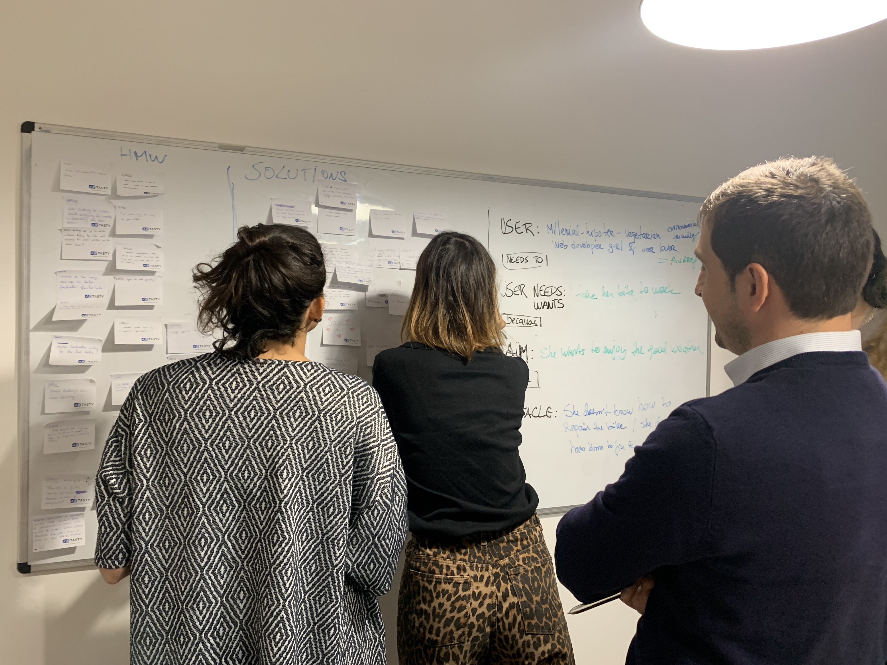
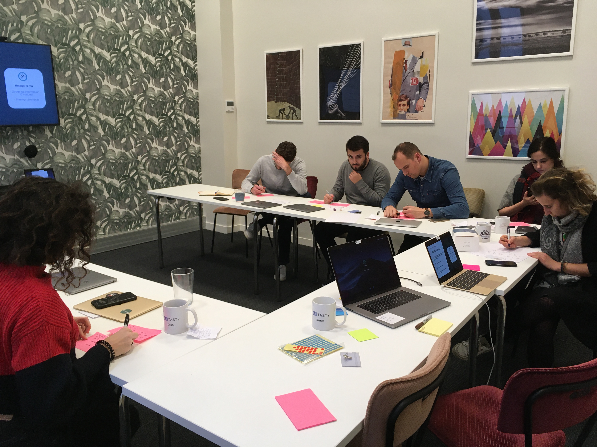
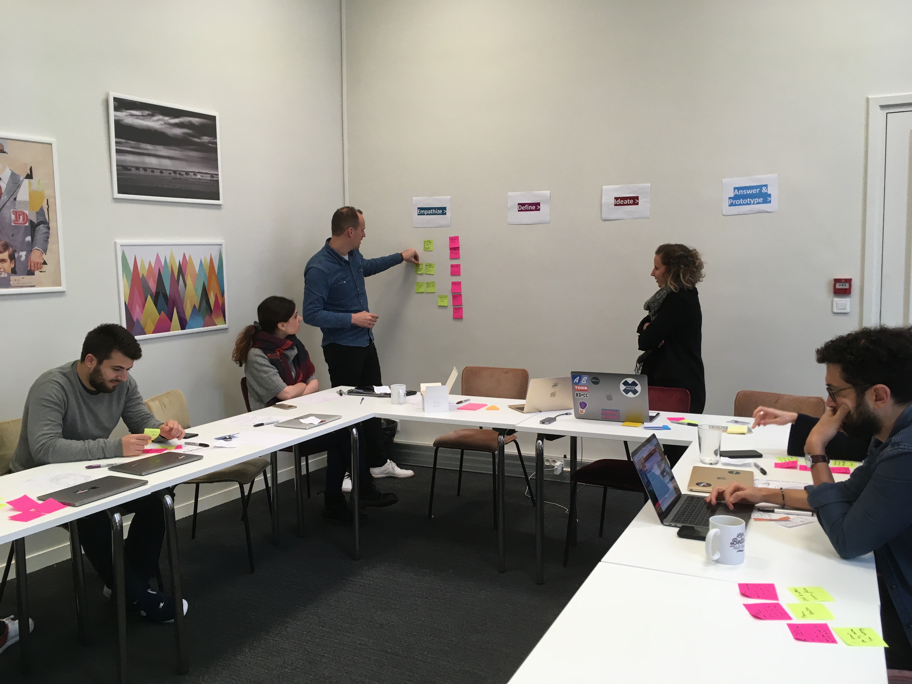
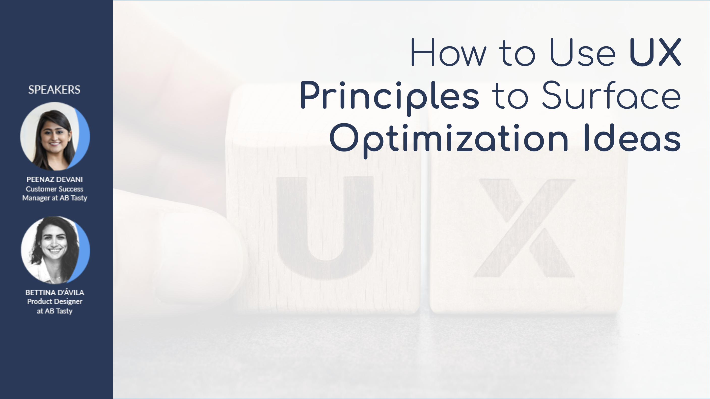

These are some of the activities of UX evangelization that I've been running as Senior Product Designer at AB Tasty. These activities include workshops, webinars and training programs for internal employees, partners and clients.
I created an internal training program on UX Design whose goal is to evangelize all departments, but specially Customer Success Managers, about the importance of UX Design as a competitive business strategy.
The training encompassed 4 modules, from the basic knowledge of what UX Design is, to more in-depth UX methodologies and visual design best practices.
As a result of UX Academy impact, I helped building another workshop program for the CSMs so they can apply it directly with clients. The goal was to show Design Thinking methodology and the Double Diamond Diagram framework as useful processes to generate good test ideas for CRO and build a roadmap.
The programme engaged the participants into practical exercises with real use cases, where they can understand the importance of user research to frame the problem the correct way (generating a problem statement), generating creative ideas to solve that problem and how to prioritize the selected ideas to build a mid-term roadmap.
I also had the opportunity to give talks and workshops to clients from different European countries, such as France, Germany, UK and Spain.
 I also conducted a Webinar with Peenaz Devani, one of our Customer Success Managers in the United States, entitled "How to Use UX Principles to Surface Optimization Ideas" - presenting the Design Thinking methodology applied to CRO. The Webinar was streamed live focusing on our clients and prospects from United States and Canada. You can find the webinar deck here.
Sometimes I get to participate in events with clients to present materials about UX Design and methodologies to help them improve the conversions on their website using the AB Tasty platform.
The last event I participated in was 'Stammtisch' in Berlin in November 2019. Inspired by the Design Thinking Factory, I set up a workshop programme of 1h to show them how to generate a problem statement, create different ideas and prioritize them for the elaboration of a roadmap. You can check the slides here.